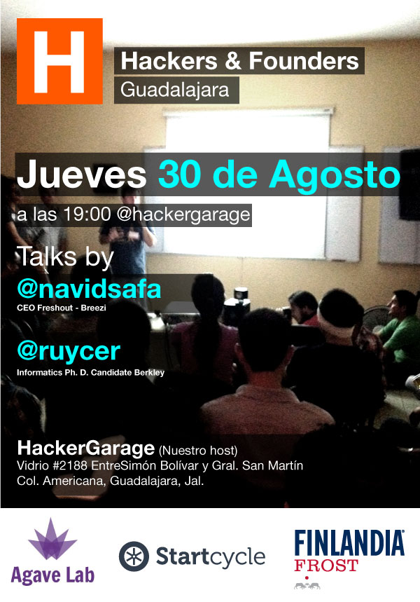

Jueves 30: Hackers and Founders
Hackers & founders es una comunidad tecnológica basada en la pregunta ¿Qué Necesitas? Conoce a tus futuros socios, solicita ayuda, aprende y emprende. Nos reunimos el último Jueves del mes.
Cuando: Jueves 30 de Agosto de 2012 19:00 hrs
Donde: HackerGarage, Vidrio #2188, entre Simón Bolivar y Gral. San Martín, Guadalajara.
Precio: $50.00 Capacidad: 50 Categoría: Conferencia Publicado el 23/09/12 por @levhita